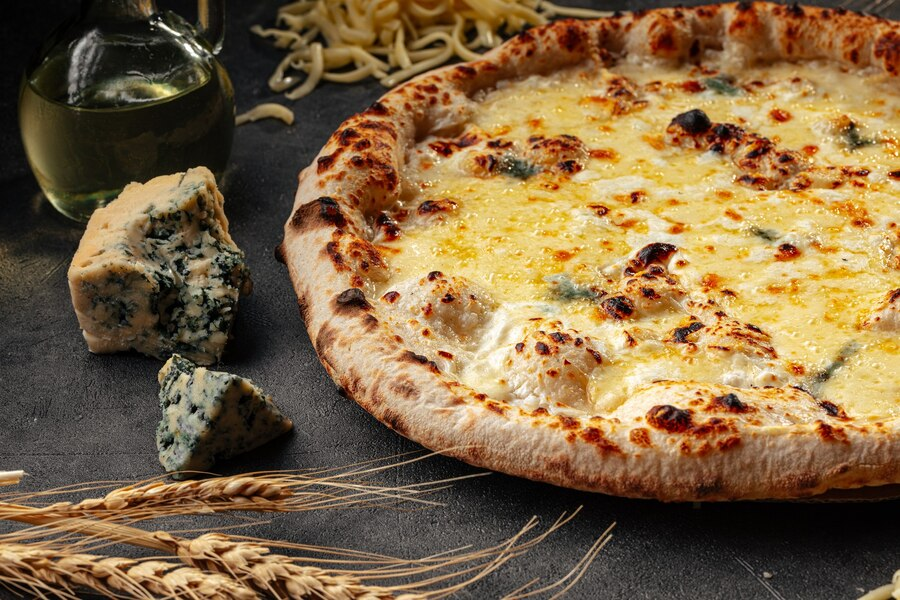

Quattro Formaggi Pizza

The choice of cheeses is not random, they should be full-fat or semi-fat and vary in flavour. Besides mozzarella, the quattro formaggi usually combines a blue or mature cheese, a soft cheese or a creamy cheese, and a hard cheese.
Ingredients
- Pizza dough
- San Marzano Tomatoes
- Fresh Mozzarella cheese
- Goat cheese
- Gorgonzola cheese
- Parmesan cheese
- Olive oil
Steps
- Preheat your oven to the highest temperature possible
- Extend the dough
- Put the tomato sauce
- Put the goat cheese
- Put the fresh mozzarella cheese
- Put parmesan cheese
- Get the pizza into the oven
- In 5 10 minutes take it out put some more olive oil and is ready to eat